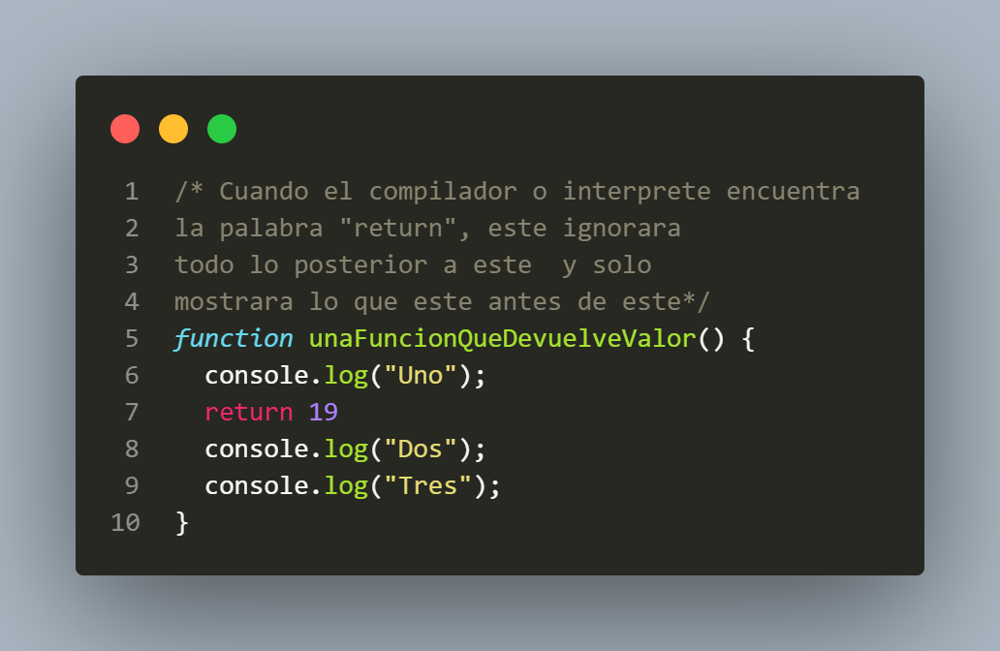
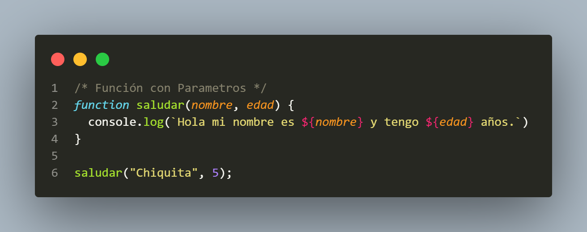
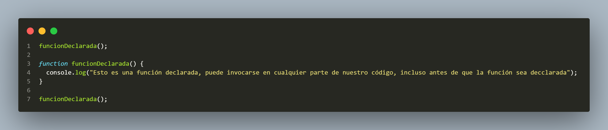
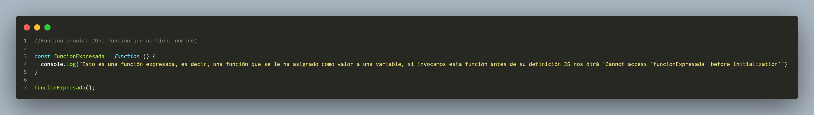

Una función es un bloque de código(diseñado para realizar una tarea especifica) autocontenido, que se puede definir una vez y ejecutar en cualquier momento. Opcionalmente, una función puede aceptar parámetros y devolver un valor. Las funciones en Javascript son objetos, un tipo especial de objetos: Se dice que las funciones son ciudadanos de primera clase porque pueden asignarse a un valor, y pueden pasarse como argumentos(entradas) y usarse como un valor de retorno.
Imagina que estás en una tienda de juguetes, y quieres comprar algo. Le das dinero al cajero, y él te da el juguete que quieres a cambio. En este caso, el dinero que le das es como los argumentos que le das a una función, y el juguete que te devuelve es como el valor que la función te "regresa" o "devuelve" usando return. Cuando escribes una función en programación, a veces quieres que esa función haga algo y luego te dé un resultado, como resolver un problema matemático y darte la respuesta. Ese "resultado" lo obtenemos usando la palabra return.
function sumar(a, b) {
return a + b; // 'return' devuelve la suma de 'a' y 'b'
}
let resultado = sumar(3, 4); // Aquí llamamos a la función sumar
console.log(resultado); // Esto imprimirá '7'
Entonces, return es la forma en que una función te da una respuesta después de hacer su trabajo. Si no usas return, la función puede hacer algo, como imprimir un mensaje, pero no te dará un valor de vuelta que puedas usar más adelante. Es como si la tienda no te diera un juguete después de darles tu dinero.
Los contenidos entre paréntesis en una función se llaman parámetros. Estos son valores o variables que la función espera recibir cuando se invoca, y que se utilizan dentro de la función para realizar operaciones o cálculos. Cuando llamas a la función, proporcionas argumentos, que son los valores concretos que se pasan a esos parámetros. Los valores que colocas cuando llamas a una función se llaman argumentos. Estos argumentos se pasan a los parámetros definidos en la función
function saludar(nombre, edad) { // 'nombre' y 'edad' son los parámetros
console.log(`Hola ${nombre}, tienes ${edad} años.`);
}
/ Llamada a la función con argumentos/
saludar("Chiquita", 19); // 'Chiquita' y '19' son los argumentos

La función Declarada te permitira invocarla en cualquier parte sin importar si esta más arriba de la declaraciónde este mismo
La función Expresada es la que no tiene un nombre como tal y es un valor dentro de una variable. Este además no te dejara invocarla si aún no esta inicializada , es decir, si lo invocas antes que esta.
